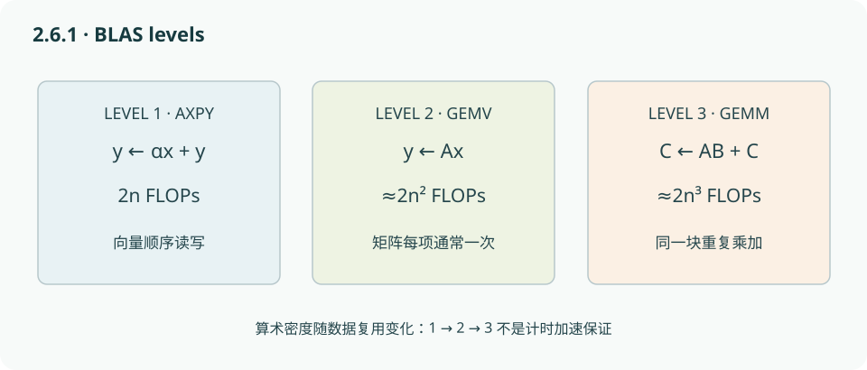

CHAPTER 02 · LINEAR EQUATION SOLVING
BLAS 三级为何代表三种完全不同的数据复用方式
用浮点运算数与主存搬运下界认识 AXPY、GEMV 和 GEMM，而非只背接口名字。
BLAS 是数值软件的基础接口约定，不是某个唯一的实现。Level 1 处理向量—向量运算，Level 2 处理矩阵—向量，Level 3 处理矩阵—矩阵。重要差异不是 API 名称，而是同一块输入数据在被移出快速存储前能参与多少次计算。
向量操作、矩阵向量乘法和矩阵乘法都做乘加，为什么性能潜力完全不同？

Level 1：一次线性扫描会被带宽限制
以 y←αx+y（AXPY）为例，长度 n 的实数向量约有 2n 次浮点运算（每项一乘一加）；若每个 float64 占 8 字节，理想读写最低要读取 x、读取 y、写回 y，合计约 24n 字节，运算密度约为 1/12 FLOP/byte。
缓存、写分配、对齐、别名和线程调度会让实际传输量与这个模型不同。该值是方便理解的流式访存模型，不是任何机器上测得的精确常数。
Level 2：矩阵向量乘法仍难以重复使用大矩阵
对 y←Ax，稠密 A 的每个元素通常只参与一次乘加。n×n 情况下约为 2n² FLOPs，仅 A 的读取就需要约 8n² 字节，因此 n 足够大时运算密度上界大约 1/4 FLOP/byte。还需计入 x 和 y 的读写，真实密度通常更低。
尽管现代 BLAS GEMV 可利用 SIMD 与多核，性能往往仍受到数据传输约束。它并不因为“用了 BLAS”就自动变成计算密集型操作。
Level 3：矩阵乘法让每个载入元素反复参与运算
对 C←AB+C，稠密 n×n 矩阵乘法约为 2n³ FLOPs。若 A、B、C 的读写在理想缓存层次中只需按 n² 量级搬运，则运算密度随 n 增长；用 32n² 字节作乐观流量基线可写 I≈n/16 FLOP/byte。
这里的 32n² 是理想化必需流量，不保证任一实现能达到；矩阵不能全部放入缓存时，必须依赖分块、打包和高效内核降低额外搬运。运算量更大，不代表 GEMM 的总时间一定少于 GEMV。
用三个标准操作检查维度与语义
AXPY 的输出仍是 n 维向量；GEMV 产生 n 维向量；GEMM 的输出为 n×n 矩阵。转置约定和行主序/列主序是接口的一部分，误把 Aᵀx 当成 Ax 可能产生维度正确但语义错误的结果。
在 NumPy 中，a*x+y、A@x 与 A@B 分别对应这些运算；实际底层是否调用特定 BLAS 内核取决于安装的库与数据布局。我们的单元测试只验证数值和模型算术数，不假定具体后端。
从接口正确性进入性能测量
公平的性能对比要锁定维度、数据类型、线程数、热/冷缓存状态、预热次数与计时方法。更要区分理论 FLOPs、最低访存量、实际内存流量和实测吞吐；不应从静态图表报告“加速倍数”。
交互图改变 n，按上述简化流量模型展示三类操作的运算密度趋势。条形差别来自数学模型计算，不是基准测试或硬件保证。
交互探索：向量操作、矩阵向量乘法和矩阵乘法都做乘加，为什么性能潜力完全不同？
调整参数后，图形和数值将一起更新。下方是可重复计算的教学模型。
以 y←αx+y（AXPY）为例，长度 n 的实数向量约有 2n 次浮点运算（每项一乘一加）；若每个 float64 占 8 字节，理想读写最低要读取 x、读取 y、写回 y，合计约 24n 字节，运算密度约为 1/12 FLOP/byte。
图上的数字由浏览器根据给定模型计算；并非硬件计时结果。